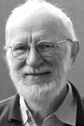

|  |
2005 год Peter Naur (1928-2016) «За фундаментальный вклад в проектирование языков программирования и создание языка Algol 60, а также в проектирование компиляторов, и в искусство и технику компьютерного программирования» |
Страна: Дания
Образование: Доктор философии в области астрономии, Копенгагенский университет, 1957
О лауреате
В начале своей карьеры астронома в Кембридже плохая погода часто мешала проводить наблюдения и большую часть времени Naur провёл за программированием Electronic Delay Storage Automatic Calculator (EDSAC), решая проблему пертурбации в астрономии. В конце 1950-х годов, несмотря на то, что он получил международную известность, как астроном, Naur решил сменить сферу деятельности и полноценно заняться изучением программирования.
В период с 1959 по 1969 год, когда Naur работал датской компании по производству компьютеров «Regnecentralen», он принимал участие в разработке языка программирования, который получил название ALGOL 60 (сокращение от Algorithmic Language 1960). Он стал главным автором отчета об алгоритмическом языке ALGOL 60 (именно в этом отчете впервые использовалась форма Backus–Naur, которая стала самым известным способом описания синтаксиса языка программирования) и принял решение, спорное в то время, использовать рекурсию в данном языке. Изначально Naur изучал работу швейцарско-немецкого языка программирования ALCOR, работу трех разработчиков: Heinz Rutishauser, Friedrich Bauer и Klaus Samelson, которые внесли существенный вклад в создания предшественника ALGOL 60 – IAL (International Algebraic Language или ALGOL 58).
Из интереса к созданию компилятора языка программирования IAL Naur очень подробно изучил отчет к этому языку. Многие идеи, отображенные в нем, оставались для него неясны. Поэтому в феврале 1959 года он и его коллеги организовали конференцию в Копенгагене, на которой вместе с людьми, интересующимися данной темой и собравшимися со всей Европы они обсуждали отчет к языку ИАЛ. Одна из основных трудностей для датчан заключалась в понимании механизма передачи параметров для выполнения компьютером процедур: создатели ALCOR рассматривали процедуру только как статический математический объект (то есть, как закрытую функцию), в то время как Naur и его коллега Jensen рассматривали ее как динамический объект и, следовательно, как что-то, что обычно имеет побочный эффект (процедура имеет побочный эффект, если в дополнение к тому, что она как любая математическая функция возвращает значение, она так же изменяет некоторое постоянное состояние системы путем изменения глобальной или статической переменной, изменения аргумента процедуры, создания исключения, записи данных в файл). Понимание механизма, не говоря уже о различных взглядах участников конференции, было слишком сложным вопросом собравшихся. Naur понял, что устная дискуссия не даст результата и попросил всех участников изложить свое мнение в письменном виде. Он создал дискуссионный журнал “ALGOL Bulletin” для отправки и получения комментариев. Этот журнал очень быстро стал основным способом коммуникации. Naur стал вскоре ведущим разработчиком ALGOL 60, а впоследствии и главным редактором отчета об алгоритмическом языке. Naur положил в основу арифметических операций ALGOL подбор их с помощью численного анализа.
Ранее упомянутое различие между старой версией языка со статическим решением и новой с динамическим сыграло очень важную роль в развитии данного языка. Naur обратил внимание руководства на такую важную часть компиляции программы как время выполнения запросов, полученных ей, и заставил Regnecentralen переключить свое внимание с разработки компилятора на концентрацию в первую очередь на среду выполнения ALGOL.
Основными областями его исследований стали разработка, структура и эффективность компьютерных программ и алгоритмов. Naur также был первопроходцем в области инженерии программного обеспечения и исследованиях архитектуры приложений. В своей книге “Computing: A Human Activity” (переведена на русский), которая состоит из его трудов в области информатики, Naur отвергает утверждения формалистской школы программирования, согласно которым разработка программного обеспечения является ответвлением математики.
В соответствии с его исследованиями, основной его вклад в ALGOL заключался в выборе правильных форм описания для определения языка.
В 1969 году Naur стал профессором университета в Копенгагене. Основными сферами его исследований в течение этого времени были дизайн, структура и производительность компьютерных программ и алгоритмов. Помимо того, что Naur обучал студентов основам вычислений информатики, он неоднократно подчеркивал важность того, чтобы они работали над компьютерными приложениями в других областях. Naur не любил термин «информатика» и вместо этого он называл свой предмет «даталогия» (datalogi) или «наука о данных», потому что уделял особое внимание изучению проблем анализа, обработки и представления данных в цифровой форме. Он использовал этот термин в 1974 году в своей книге, в которой он дал определение «науке о данных» как дисциплине, изучающей жизненный цикл цифровых данных — от появления до преобразования для представления в других областях знаний.
Ключевые слова: ALGOL (ряд языков программирования), Backus-Naur form (Форма Бэкуса-Наура)
Краткая библиография
1. |
Naur, P., “The Place of Programming in a World of Problems, Tools, and People,” Proceedings IFIP Congress 65, 1965, pp. 195-199. В статье исследуется, как соотносятся реальная решаемая задача, программист и его инструменты (включая язык программирования). |
2. |
Naur, P., “Proof of Algorithms by General Snapshots,” BIT Nordisk Tidskrift for Informationsbehandling, Vol. 6 (1966), pp. 310-316. Статья представляет собой конструктивный подход к доказательству корректности программ используя метод инвариантов. Одна из первых статей по проверке программ на корректность. |
3. |
Naur, P., Concise Survey of Computer Methods, Studentlitteratur, Lund, 1974. В этой книге Naur утвержает, что правильное понимание задачи является ключевым звеном в её решении, а формальное априорное фиксированное описание часто непрактично. |
4. |
Naur, P., “Programming Languages, Natural Languages, and Mathematics,” Communications of the ACM, Vol. 18, Num.12 (Dec. 1975), pp. 676-683. В этом документе рассматриваются сходства и различия между языками программирования, естественными языками и математикой. Может ли богатое прошлое последних двух помочь нам ожидать будущих изменений в программировании? |
5. |
Naur, P., “Formalization in program development,” BIT Nordisk Tidskrift for Informationsbehandling, Vol. 22 (1982), pp. 437-453. Naur опровергает аргументы в защиту формализации в разработке программ и рекомендует только формальные стили спецификации, которые повышают интуитивное понимание программиста. |